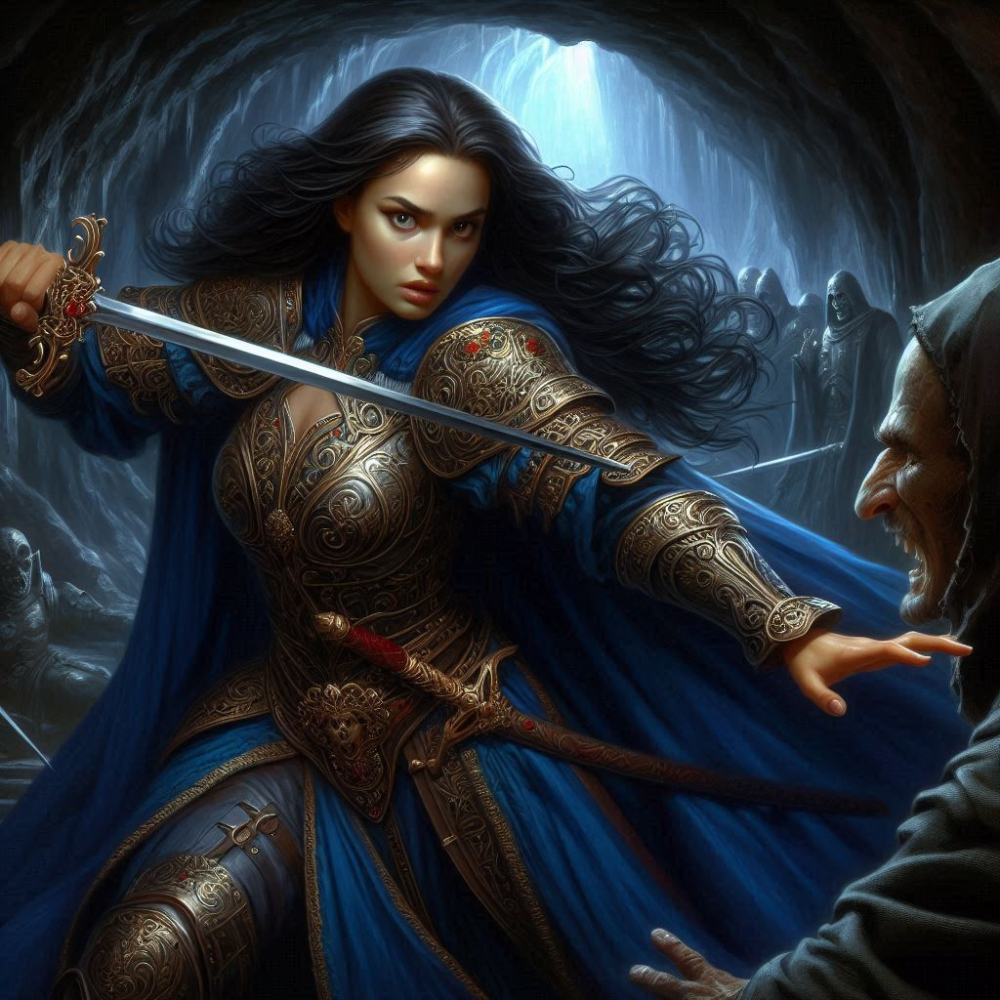
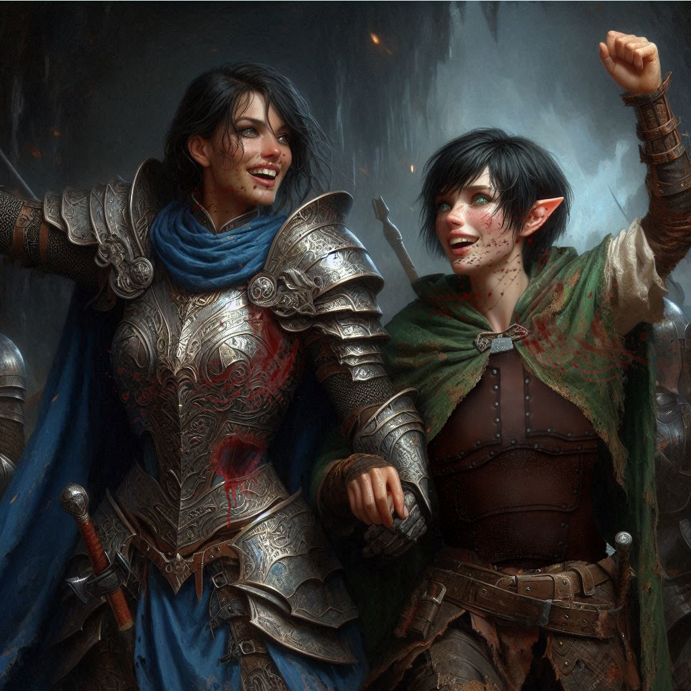

The Death of Fear
The moment of decision hangs heavy in the air. You glance at the wary faces of Baider and Elias, then at the panicked gaze of Princess Hawthorn. The mercenaries, cold and silent, surround you like wolves circling their prey, their dark armor gleaming ominously in the dim cavern light. You know surrender isn’t an option—not with so much at stake, not with Jorsh and Varis’s plans looming in the shadows ahead.
You grip your sword tighter, feeling the familiar weight of it in your hand. "We fight," you say, your voice steady though your heart pounds in your chest. "We can't let them stop us here."
Baider grunts in approval, lifting his massive warhammer, while Elias draws his bow, his blue eyes flicking toward you for reassurance. You offer him a quick, resolute nod. Princess Hawthorn, however, looks stricken.
"You’ll get us all killed!" she hisses, stepping forward. “We are outnumbered!”
"We’re outmatched if we surrender," you counter, locking eyes with her. You sense the fear beneath her defiance, but there’s no time to ease it. "If we don't stop Varis, none of us will survive what he’s planning."
The sorceress Liora, standing beside Hawthorn, seems unnervingly calm. Her pale hands weave through the air, strands of shimmering magic sparking from her fingertips. "The ranger is right," she says in a low, melodic tone. "These mercenaries are mere obstacles. Varis and Jorsh are the true threats."
Hawthorn's lips tremble, but she says nothing more. Her sword hangs loosely at her side, unraised, unwilling.
There’s no time to argue further. The first of the mercenaries steps forward, his blade reflecting the flickering light of the cavern's torches. The fight begins.
You throw yourself into the fray, your sword meeting the mercenary’s with a sharp clang. His strength surprises you, but you dig your feet into the ground, pushing back with all the might you’ve honed over years as a ranger. Out of the corner of your eye, you see Baider roaring into battle, his hammer swinging in powerful arcs, sending mercenaries flying with each bone-crushing blow. Elias moves with precision, loosing arrows that strike true, felling his targets one after another.
The mercenaries press hard. Steel flashes and sparks fly as your sword collides with theirs. You duck and weave, narrowly avoiding a dagger aimed at your throat. Your mind is sharp, focused—this is what you’ve trained for. But there are too many, and the weight of their assault begins to press down on you like a vise.
Behind you, Liora chants in an ancient tongue, her magic lancing through the cavern like bolts of lightning. The air crackles with energy, and you feel a surge of power wash over you. But it’s not enough to turn the tide—not yet.
Then, just as you deflect another blow, you hear a sharp cry. You turn to see Hawthorn—her face pale, her hand clutching her side as blood seeps between her fingers. She falls to her knees, her sword clattering to the ground. Liora breaks from her spellcasting, rushing to the fallen princess’s side.
“Hawthorn!” you shout, trying to reach her, but another mercenary blocks your path. You grit your teeth and drive your sword forward, plunging it into the soldier's side. He falls with a gurgling gasp, and you rush to Hawthorn's side.
Liora is already kneeling beside her, her hands glowing with a soft, healing light. But it’s clear from the strain on her face that she’s running out of mana.
“This... this wasn’t supposed to happen,” Hawthorn whispers, her eyes wide and unfocused. “I didn’t want to die here.”
“You’re not dying,” you say firmly, dropping to one knee beside her. “Not today.”
Liora’s voice trembles with effort as she speaks. “I can save her, but it will drain the last of my magic.”
You look down at Hawthorn, her breathing shallow and ragged. You have no choice. “Do it,” you command. “Save her.”
With a nod, Liora places both hands on Hawthorn’s wound, and the light intensifies. Hawthorn gasps, her body convulsing as the magic flows into her, knitting her flesh back together. After what feels like an eternity, the glow fades, and Hawthorn’s breathing steadies.
Liora collapses beside her, drained. “She will live,” she whispers, her voice barely audible.
Relief washes over you, but it’s short-lived. The mercenaries are still advancing, though their numbers have thinned. You rise to your feet, determination flooding your veins.
“Hawthorn!” you shout, “Get up! We need you.”
To your surprise, she stirs. Slowly, shakily, she pushes herself up, her eyes focusing on you with a new intensity. “You... you saved me,” she says, her voice filled with wonder.
“You saved yourself by being brave enough to fight,” you reply, offering her a hand. She takes it, pulling herself to her feet. The princess you see now is different—a little less afraid, a little more resolute.
“I was wrong about you, Kira,” Hawthorn says, her voice soft but strong. “You’re not reckless. You’re brave.”
Before you can respond, another wave of mercenaries surges toward you. Baider and Elias are still fighting with all their might, but they need help.
You look at Hawthorn, her sword now raised. “Are you ready to fight with us?” you ask.
Hawthorn nods, a fierce glint in her eyes. “Let’s finish this.”
Together, with Baider’s strength, Elias’s precision, Hawthorn’s newfound courage, and your determination, you drive back the remaining mercenaries. The battle is brutal, but you emerge victorious, the last of the soldiers falling to the cavern floor.
The air is thick with the stench of sweat and blood, but for a moment, there is silence. You catch your breath, scanning the battlefield.
Hawthorn stumbles toward you, her hand on her side where Liora healed her. “Kira,” she says, her voice weary but sincere. “Thank you... for everything.”
But the battle isn't truly over. You know what comes next—the decision. With Liora’s magic depleted, the sorceress is vulnerable, and Hawthorn is still injured.
You take a deep breath. “We have to move,” you say. “But Liora… she won’t make it without rest.”
Hawthorn hesitates, then meets your gaze. “If we send her back, we lose her power. But if she stays… she could die.”
It’s a decision only you can make. And, once again, the weight of leadership falls squarely on your shoulders.